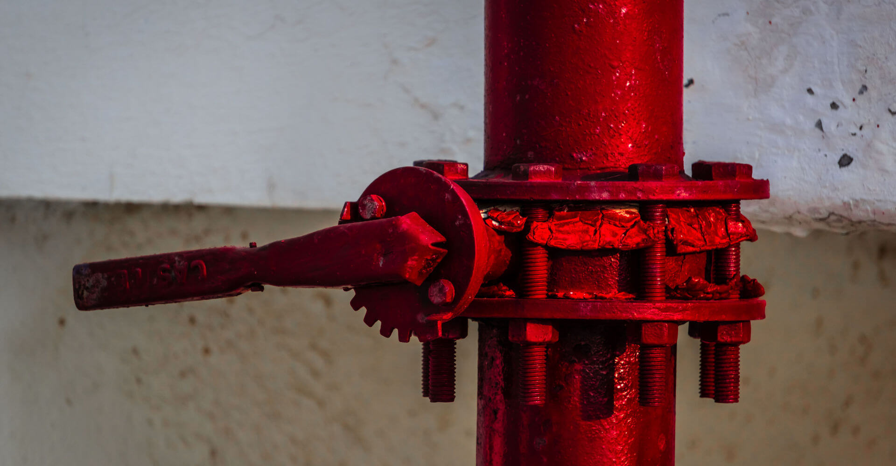
What Is AS 2941? Understanding Fire Pump Standards in Australia
AS 2941:2013 is the Australian Standard that specifies the mandatory requirements for designing, constructing, installing, and maintaining fire pump…
Read articleAre you looking for specialised fire hydrant pump systems that offer quality and full compliance with Australian standards? Aline has you covered. Our turn-key fire pumpsets are engineered to deliver optimal performance.
Both diesel and electric drive configurations are readily available, assembled on a common fabricated base with pipework manifolds, valves, controls, and accessories to give you a fully automated, AS2941-compliant system.
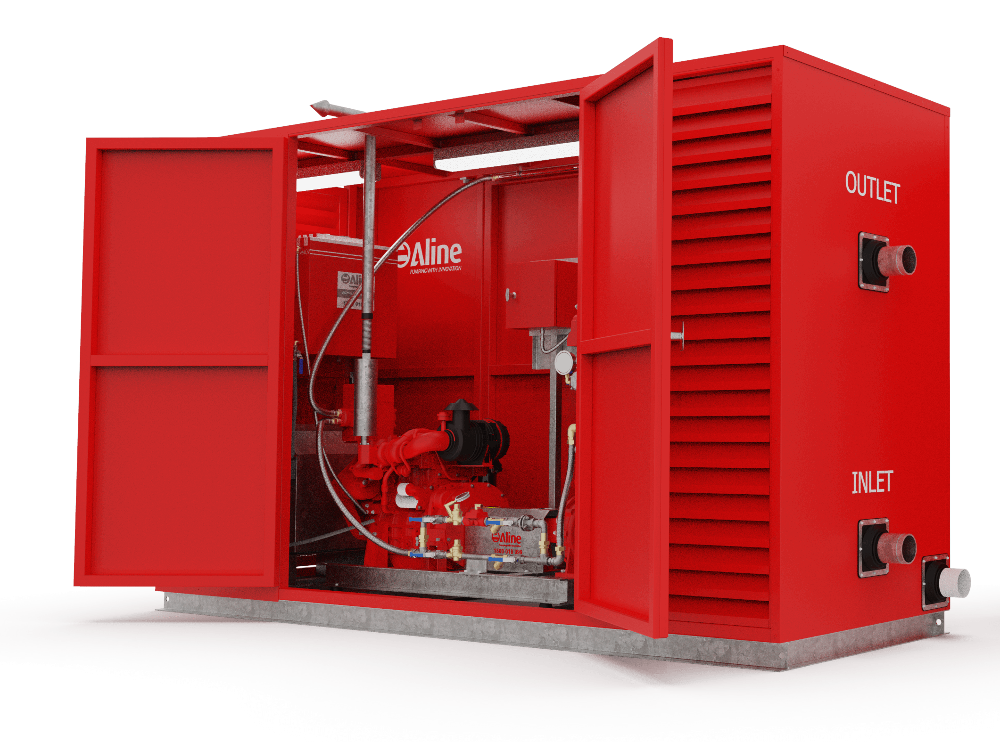
10 products
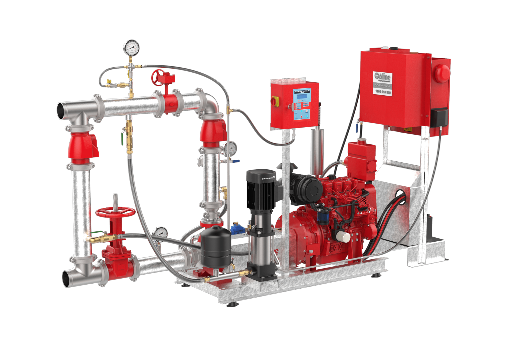

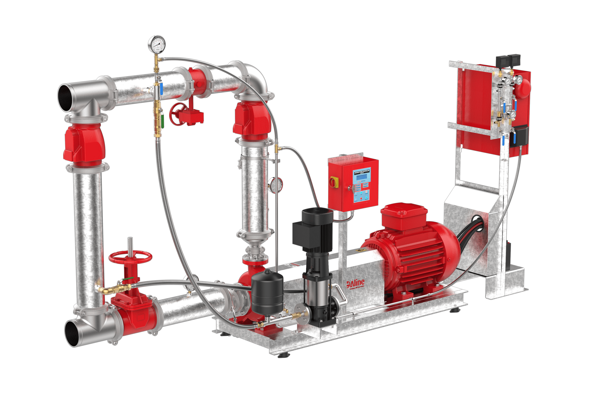
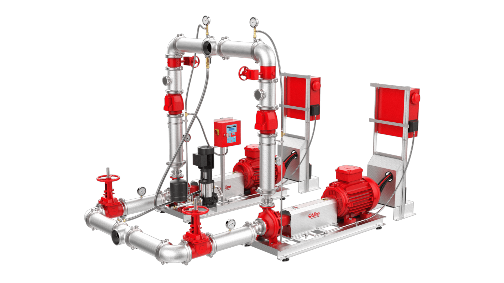
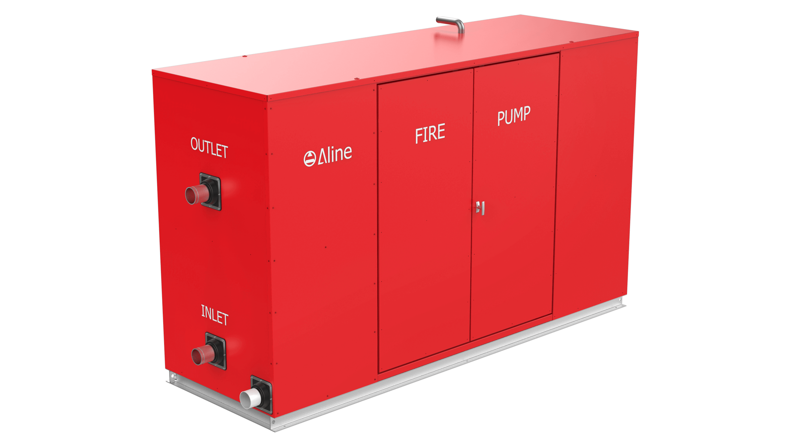
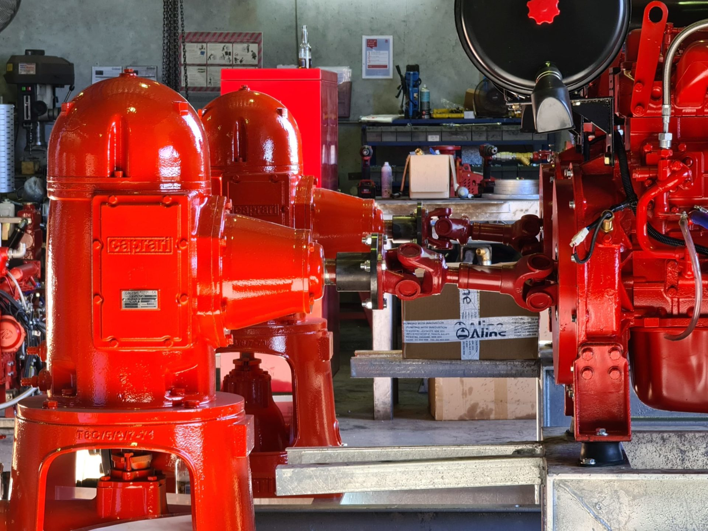
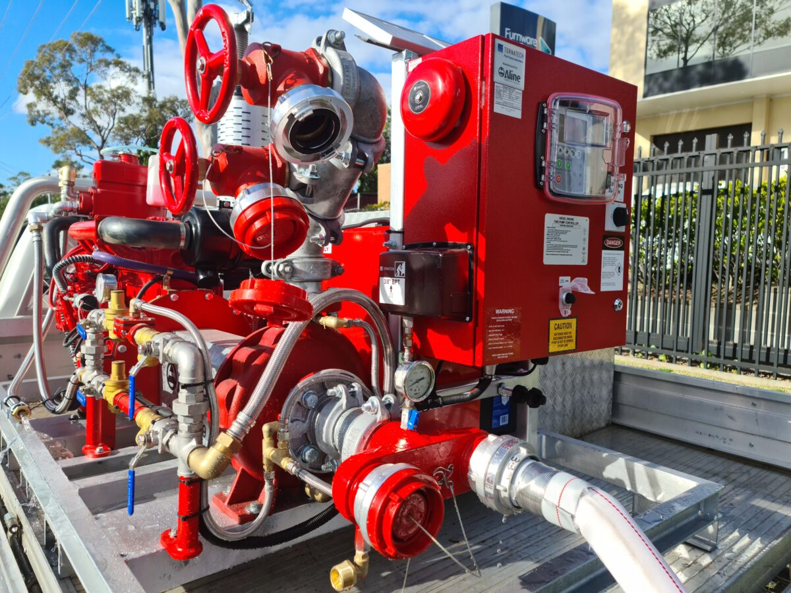
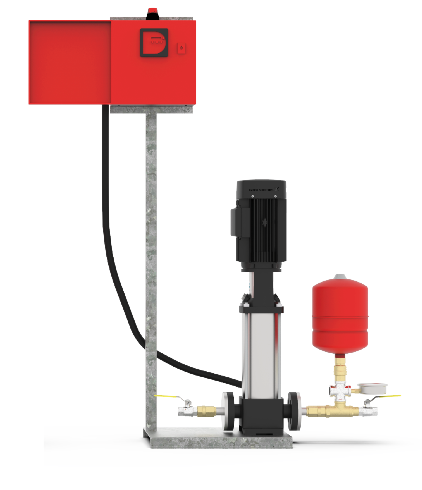
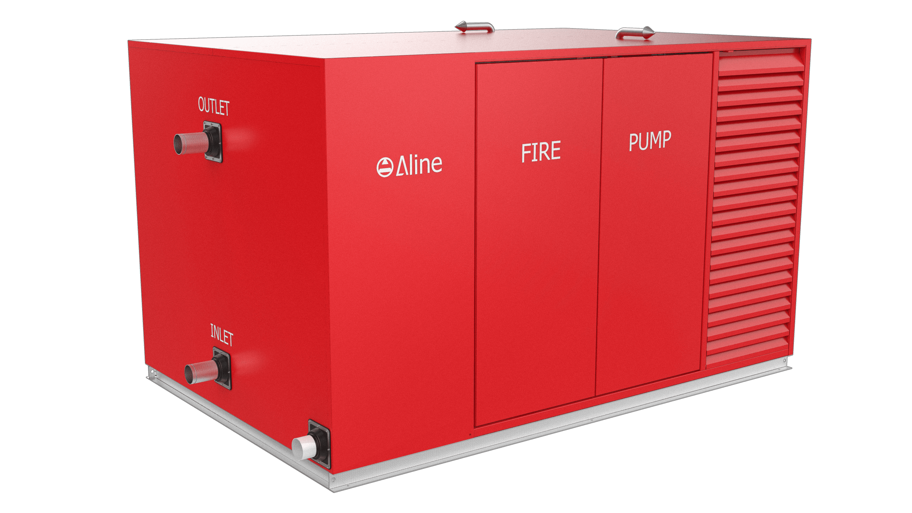
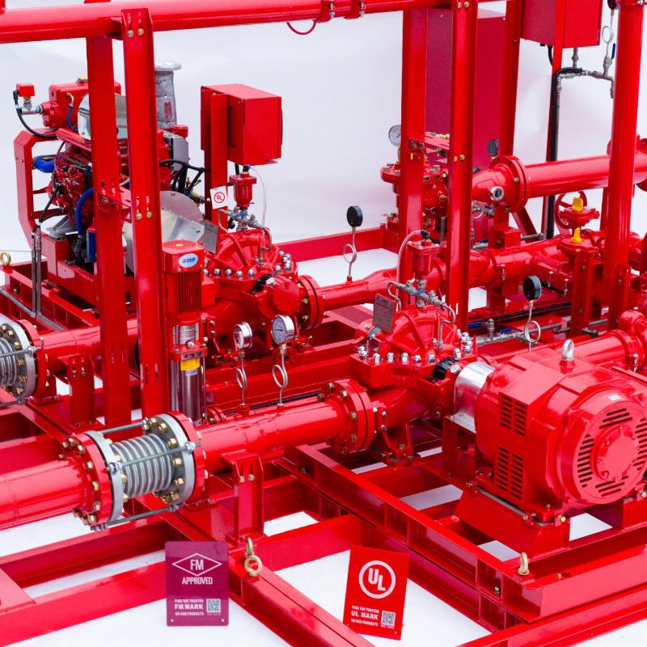

AS 2941:2013 is the Australian Standard that specifies the mandatory requirements for designing, constructing, installing, and maintaining fire pump…
Read article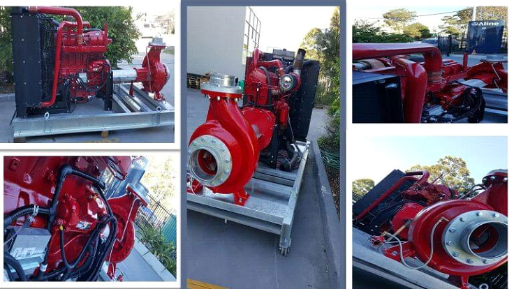
If you’re searching for fire fighting pumps for sale in Australia, Aline Pumps offers a comprehensive range of certified solutions that deliver…
Read article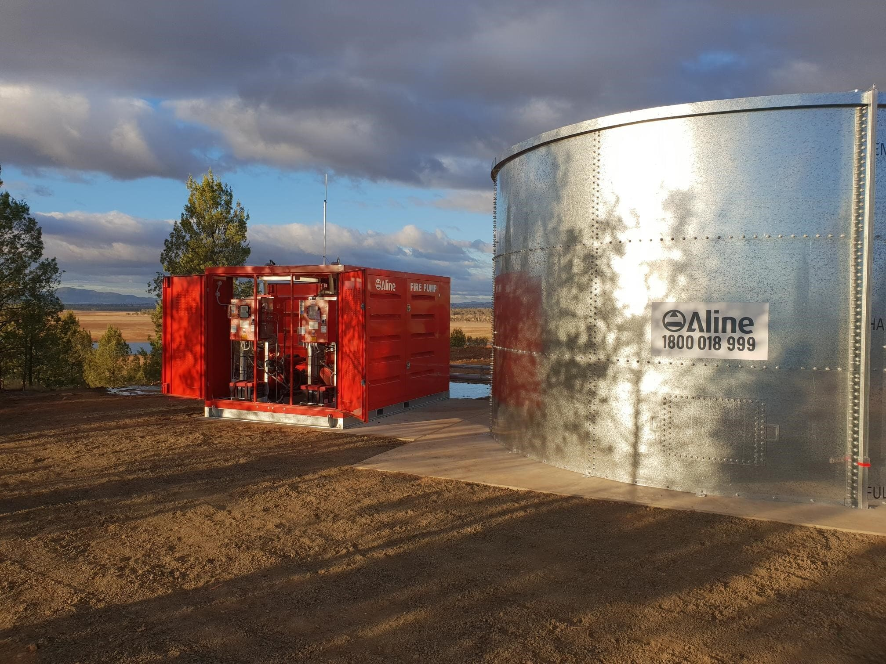
Eire Construction is a valued client of ours, who’s primary focus is installation and setup of regional and remote Fire Protection services. They…
Read article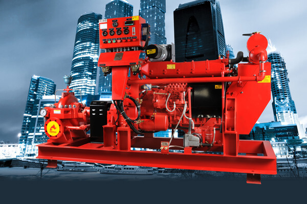
Today, Aline Pumps takes immense pride in announcing that Aline Pumps have added one more star to our company by becoming a proud and exclusive…
Read article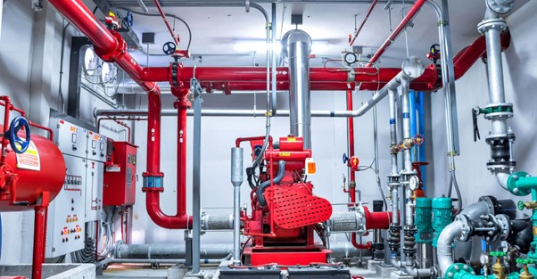
How Often Should a Fire Pump Be Tested? When it comes to buying fire pump systems, water storage tanks and valves online, Aline Pumps is Australia’s…
Read article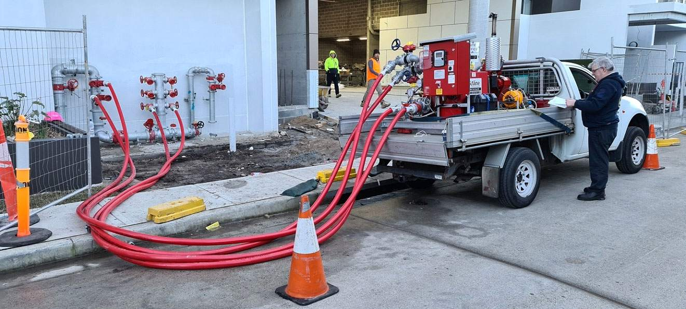
Fire systems are used for water-based fire protection in a variety of establishments, taking water from the available water supply and increasing the…
Read articleAsk our team to confirm the right fit for your application.
Ask for product adviceSend your application requirements to Aline Pumps or call 1800 018 999.